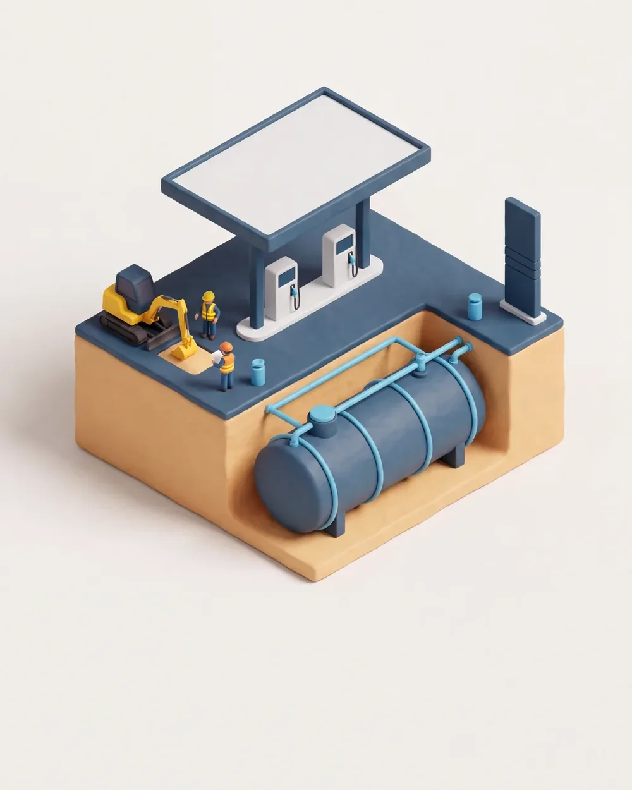
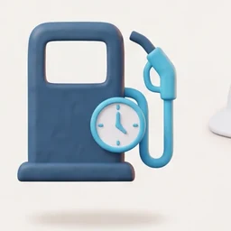
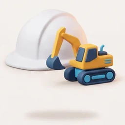
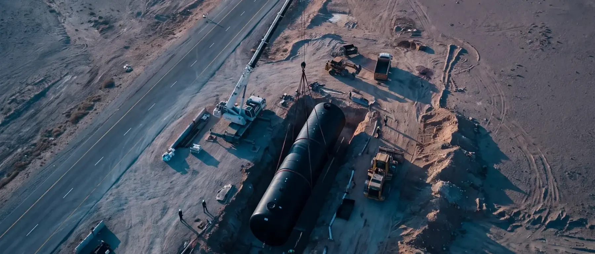
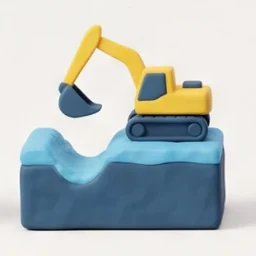
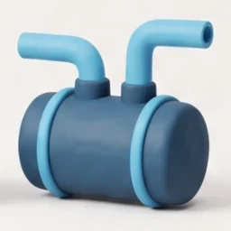
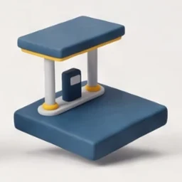
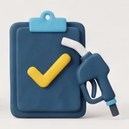
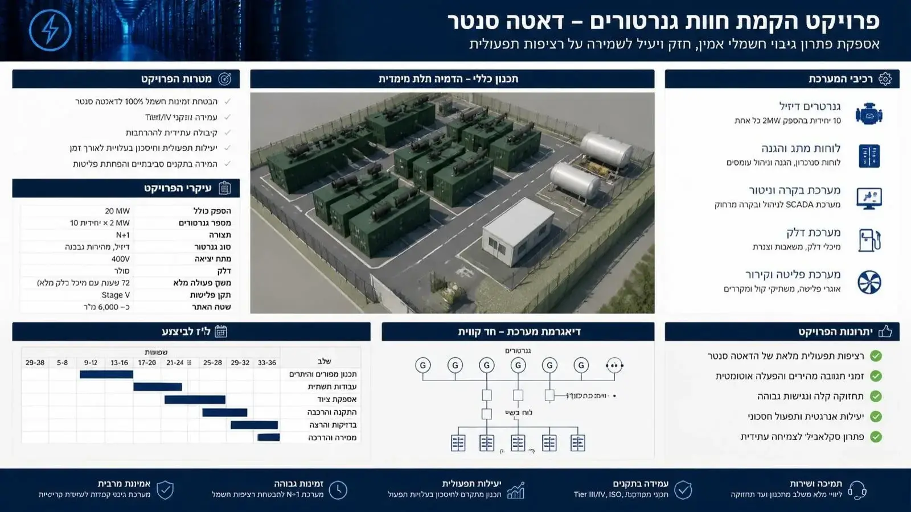
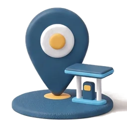

הנדסה וביצוע של תשתיות דלק · מאז 1988
תשתיות דלק שעומדות במבחן הזמן והתקן
הקמה ושיפוץ של תחנות דלק ותחנות גז, צנרת דלק ועבודות עפר, מהיסודות ועד המשאבה, גם כשהתחנה ממשיכה למכור. ועכשיו גם תשתיות דלק וחוות גנרטורים לדאטה סנטר.
- 1988שנת ההקמה
- 5 חברותמובילות בין לקוחותינו
- 38 שנהשל תשתיות דלק
בין לקוחותינו


- amazonפרויקט דאטה סנטר

כל פרויקט נמסר לפי
 תקני המשרד להגנת הסביבה
תקני המשרד להגנת הסביבה תקנות משרד העבודה
תקנות משרד העבודה מישוב אדים Stage II
מישוב אדים Stage II מיכלים וצנרת דו־קיריים
מיכלים וצנרת דו־קיריים הגנה קתודית וחשמל סטטי
הגנה קתודית וחשמל סטטי
מאז 1988 אנחנו בונים את מה שמתחת לרחבת התדלוק: מיכלים, צנרת ובטון שחייבים לעבוד עשרות שנים בלי טעות אחת. היום אותו דיוק משרת גם את חוות הגנרטורים של הדאטה סנטר.
 המייסדים 67, מושב בניההמשרד והמחסן הלוגיסטי
המייסדים 67, מושב בניההמשרד והמחסן הלוגיסטי אזור פעילותכל הארץ
אזור פעילותכל הארץ ציוד מכני הנדסי משלנוצוותים קבועים
ציוד מכני הנדסי משלנוצוותים קבועים
בתשתיות דלק
מצוינות הנדסית בתשתיות דלק, מהתכנון ועד המסירה
ש. גוטובסקי מתמחה בהקמה ובשיפוץ של תחנות דלק ותחנות גז, ומלווה כל פרויקט מהתכנון ועד המסירה: עבודות עפר, מיכלים תת־קרקעיים, צנרת דלק, ריצוף ומבנים. אנחנו עובדים לצד חברות הדלק הגדולות בישראל, ומכירים היטב את הדרישות התכנוניות, הבטיחותיות והסביבתיות שמלוות כל תחנה.
הניסיון הזה מוביל אותנו גם לתחום חדש: תשתיות דלק, אחסון וגנרטורים לדאטה סנטר, שם אמינות ההספק היא הכל.
-
עמידה בתקנים סביבתייםמישוב אדים בתקן Stage II, מיכלים וצנרת דו־קיריים, מניעת זיהום קרקע ומים.
-

תחנה שממשיכה לעבודביצוע בשלבים בתחנות פעילות, כך שחלק מהעמדות מוכר דלק בכל שלב. -

צוות מיומן וציוד ייעודיצוותים קבועים, ציוד מכני הנדסי משלנו, ואחריות מלאה על הביצוע.
כל מה שתחנת דלק צריכה, מגורם מבצע אחד
שישה תחומי ביצוע, צוות אחד, אחריות אחת. מרחפים על שורה כדי לראות מהשטח.
-
01
הקמת תחנות דלק
הקמה מלאה של תחנה חדשה: עפר, מיכלים, צנרת, ריצוף, סככה ומבנה שירות, בתיאום עם חברת הדלק והרשויות.

-
02
שיפוץ ושדרוג תחנות
החלפת מיכלים וצנרת, שדרוג למישוב אדים, חידוש ריצוף וסככות, והתאמה לרגולציה העדכנית.

-
03
תחנות גז
הקמה ושיפוץ של תחנות תדלוק בגז, כולל תשתיות, בטיחות ותיאום עם הגורמים המוסמכים.

-
04
עבודות צנרת דלק
צנרת דלק ואדים, צנרת דו־קירית, חיבורים למיכלים ולמשאבות, בדיקות לחץ ואטימות ותיעוד מלא.

-
05
עבודות עפר ופיתוח
חפירה, מילוי והידוק, הכנת שטח, בורות מיכלים, ניקוז וריצוף, עם ציוד מכני הנדסי משלנו.

-
06
דלק וגנרטורים לדאטה סנטר יכולת חדשה
בורות ובסיסים, מיכלי דלק תת־קרקעיים ועיליים, צנרת הזנה בתצורת N+1, וחיבור למערכות הבקרה.

מתכננים הקמה או שדרוג של תחנת דלק?
השאירו טלפון ונחזור אליכם, בלי התחייבות. או התקשרו לעוזי: 050-270-3674
מה עשינו, ואיך
חמישה פרויקטים מייצגים: הקמות מחדש, שיפוץ בתחנות פעילות, תחנת גז ותחנת הדלק הגדולה בארץ.
-
תחנת דלק נובר – אשדוד
הקמה מחדש של תחנה קיימת לפי התקנים הבינלאומיים המחמירים של איכות הסביבה.
התחנה הוקמה מחדש תוך הריסת התחנה הקיימת, פירוק כל תשתיות הדלק, משטחי הבטון, איי התדלוק והאספלט. הבנייה מחדש כללה צנרת פיברגלאס להולכת דלק, מערכת מישוב אדים (Stage II), מערכות חשמל סטטי והגנה קתודית, מערכת מילוי דופן כפולה ושוקת מילוי תקנית (5 גלון). התחנה הורחבה עם תשתיות למכונות שטיפת רכבים ואפשרות כניסה למשאיות, כולל בניית קיר תומך באורך 64 מטר ובגובה 3 מטר. צוות גדול של עובדים מקצועיים ומיומנים ביצע את העבודה תוך שמירה על איכות גבוהה ועמידה בלוחות הזמנים.
-
תחנת דלק דור אלון – אילות
שיפוץ מקיף שבוצע בזמן שהתחנה פעלה, בהקפדה על בטיחות הלקוחות והעובדים.
השיפוץ כלל פירוק משטחי בטון וחפירה לעומק של כשני מטר, פירוק שוחות שקרסו מעל גב מיכלי הדלק ובניית שוחות בטון חדשות לפי תקני המשרד להגנת הסביבה. צנרת המילוי הוחלפה, האדמה המזוהמת הוצאה ופונתה לאתר מורשה, הונחה אדמה נקייה וחדשה ונוצק משטח בטון חדש.
-
תחנת גז פחמימני מעובה (גפ"מ) – דימונה
הקמת תחנת גז תחת פיקוח מחמיר של מהנדסי פז-גז ותקני איכות הסביבה ומשרד העבודה.
העבודה בוצעה בהקפדה על שמירת מרחק משוחות חשמל ומתעלות, התקנת תותח מים לכיבוי אש ועוד. בוצעה חפירה להטמנת שני צוברי גז בעומק שני מטר ויציקת משטח בטון לעיגון המכלים, הכנת תשתיות חשמל ותקשורת, חפירת תעלות, התקנת מערכות גז, יציקת משטחי בטון, התקנת קומפרסור אוויר ליד מכלי הגז, בניית אי תדלוק וגג לתחנה והתקנת המשאבה.
-
תחנת דלק חצי חינם – חולון
הקמה מחדש: תשתיות דלק, צנרת מילוי, ניקוז ומיכל טמון בעומק ארבעה מטר.
ההקמה כללה בניית תשתיות דלק וצנרת מילוי למיכלים, התקנת אי תדלוק ומשאבות דלק, בניית תעלות ניקוז לתשטיפים והתקנת מפריד דלקים. מיכל דלק הוטמן מתחת לאדמה בעומק של ארבעה מטר, כולל יריעת איטום ועיגון המיכל. צוות עובדים מקצועי ביצע גם את תשתיות החשמל והתקשורת ואת משטחי הבטון, עד להפעלה תקינה של התחנה.
-
תחנת דלק גל הראשונים – אשדוד
שיפוץ כללי של תחנת הדלק הגדולה בארץ. בביצוע.
העבודה כוללת פירוק משטחי בטון, פירוק משאבות הדלק הקיימות, התקנת צנרת חדשה למישוב אדים (Stage II), התקנת שוחות מלבניות המונעות דליפת דלק לקרקע והתקנת המשאבות מחדש. כל תשתיות התחנה יעמדו בתקני איכות הסביבה ומשרד העבודה, הכוללים שוחות 5 גלון למילוי הדלק, הגנה קתודית וחשמל סטטי.

הדמיה · הנחת מיכל תת־קרקעי
כל תחנה מתחילה בחור באדמה. מה שנבנה בו קובע אם היא תעבוד עשרות שנים.
מהתכנון ועד המסירה, בחמישה שלבים
תכנון ואישורים
ליווי המתכננים, תיאום עם חברת הדלק והרשויות, ותכנון שלביות לתחנה פעילה.

עבודות עפר
הכשרת שטח, חפירת בור מיכלים, מילוי מבוקר, ניקוז ותשתיות תת־קרקעיות.

מיכלים וצנרת
הנחת מיכלים דו־קיריים, צנרת דלק ואדים, בדיקות לחץ ואטימות מתועדות.

ריצוף ומבנים
רחבת בטון אטומה, מפריד שמן ודלק, סככה, מבנה שירות וחדר טכני.

בדיקות ומסירה
התקנת ציוד, בדיקות מערכות, אישורי הרשויות וחברת הדלק, ומילוי ראשון.
מהשטח
לחיצה על תמונה פותחת אותה בגודל מלא.
חלק מהתמונות הן הדמיות ומסומנות ככאלה.
כדאי לדעת לפני שמתחילים

הקמת תחנת דלק: כל השלבים מהתכנון ועד ההפעלה
מה קורה בין ההחלטה להקים תחנה לבין הלקוח הראשון שמתדלק, ואיפה נמצאים העיכובים הנפוצים.
לקריאה
תקנים סביבתיים בתחנות דלק: Stage II, מיכלים דו־קיריים ומניעת זיהום
הדרישות העיקריות של הרגולציה הסביבתית, ומה הן אומרות למי שמקים או משפץ תחנה.
לקריאה
חוות גנרטורים לדאטה סנטר: תצורת N+1, אחסון דלק ובקרה
איך בנויה מערכת גיבוי חשמלי לדאטה סנטר, ולמה תשתית הדלק היא החלק שקובע אם היא תעבוד בשעת אמת.
לקריאהלפני שמרימים טלפון
האם אפשר לשפץ תחנה בלי לסגור אותה?
כן. רוב השיפוצים שלנו מתבצעים בתחנות פעילות. אנחנו מתכננים את העבודה בשלבים, מגדרים כל אזור עבודה, ומשאירים חלק מעמדות התדלוק פתוחות לאורך כל הפרויקט.
כמה זמן לוקחת הקמה של תחנת דלק חדשה?
זה תלוי בהיקף, באישורים ובתנאי הקרקע. בשיחה הראשונה נבין את הפרויקט וניתן הערכת לוח זמנים מסודרת, ובהצעת המחיר נפרט את השלבים.
לאילו תקנים העבודה מתאימה?
לתקני המשרד להגנת הסביבה ומשרד העבודה: מישוב אדים Stage II, מיכלים וצנרת דו־קיריים, שוחות 5 גלון, הגנה קתודית וחשמל סטטי, מפרידי דלק ותיעוד בדיקות לחץ ואטימות.
אתם עובדים עם חברות הדלק הגדולות?
כן. אנחנו מבצעים פרויקטים עבור פז, סונול ודור אלון, וכן עבור יזמים פרטיים ובעלי תחנות. מכירים את הדרישות של כל חברה ואת תהליכי האישור שלה.
מה כולל תחום הדאטה סנטר?
תשתיות הדלק לגנרטורים של מרכזי נתונים: בורות ובסיסים, מיכלים תת־קרקעיים ועיליים, צנרת הזנה בתצורת N+1 וחיבור למערכות הבקרה, בתיאום עם יועצי החשמל והרגולציה.
איך מתחילים?
שולחים לנו טלפון בטופס או בוואטסאפ. נחזור אליכם לשיחה קצרה, נבין את הפרויקט, ולפי הצורך נגיע לסיור בשטח לפני הצעת מחיר.
בואו נדבר.
מתכננים תחנה חדשה, שדרוג או חוות גנרטורים? שיחה קצרה איתנו תחסוך לכם שבועות של תכנון. בלי התחייבות.
לתיאום שיחה בוואטסאפנשמח לשמוע על הפרויקט שלכם
טלפון, וואטסאפ או מייל. נחזור אליכם בהקדם.
-
עוזי · נייד050-270-3674
-
משרד08-622-9307
-

כתובתהמייסדים 67, מושב בניה